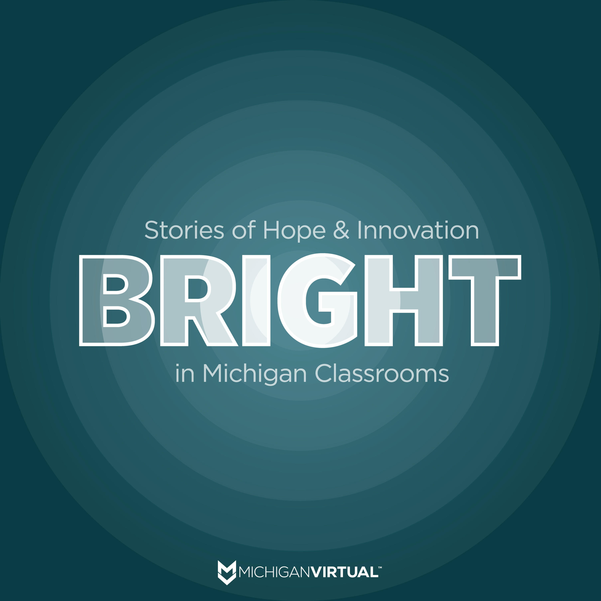

Communications Leader · Working Creative
I lead the work.
I make it, too.
Strategy, craft, and human connection.
I’m Brandon Bautista. I build communications that help people understand why an organization’s work matters, then stay close to the writing, design, and delivery that make the plan real. I spent 25 years at Michigan Virtual, moving into marketing for my final decade and eventually becoming Director of Marketing. Today, I’m the communications manager for Michigan State University’s Department of Anthropology.
The through-line
Set a direction, build the systems, and help a team carry the work forward.
Write, design, produce, and solve the details that turn a strategy into something useful.
Listen closely to sources, colleagues, and audiences. Specificity earns trust.
The work today
The same instincts.
A new setting.
I never stopped being a maker, even while leading a marketing team. At MSU Anthropology, I’m drawing on that leadership experience in a one-person communications role.
The scope spans stories, newsletters, websites, events, and the operating systems behind them. The most interesting part is still the human part: helping people and their work come through clearly.
Featured Work
Leadership and craft in practice
Communications at MSU Anthropology
A solo role spanning storytelling, a monthly newsletter, web stewardship, and the systems that help the work hold together.
View featured projectAI Strategist Consulting: Zero to $500K in Under 2 Years
Built the full growth engine, sales funnel, inbound content, and social amplification, for a brand-new consulting product line.
View featured project Featured Project
Featured Project
Creative: Video, Design, and Visual Communications
Hands-on creative work from my years in Michigan Virtual’s marketing department, alongside growing leadership responsibilities: videos, guidebooks, social graphics, infographics, and web content produced personally.
View featured projectClear the List: Spending the Last $10K Where It Mattered Most
Instead of running one more awareness campaign, I proposed funding Michigan teachers’ classroom wish lists directly. Fox 17 covered it.
View featured project
Featured ProjectBRIGHT: Stories of Hope & Innovation
Award-winning podcast with 217K+ listens/views. Built for goodwill, not pitches, and it earned Michigan Virtual durable trust across the K-12 community.
View featured projectMichigan Cares: Statewide SEL Awareness Campaign
Statewide campaign reaching 49K+ across email, paid social, TV/radio PSAs, and press. Distinct audience tracks for admins, educators, and parents.
View featured projectYearlong Enrollment Cycle Campaigns
Multi-phase digital ad campaigns generating 17.4M+ impressions and 70K+ clicks, while scaling social from zero to 31K+ across five platforms.
View featured projectMichigan Virtual Brand Standards
Led a full organizational rebrand, new brand guide, voice, visual system, and statewide rollout, unifying a 25-year-old nonprofit for a new era.
View featured projectHubSpot: Building the Intelligence Layer for a 160K-Contact CRM
Turned a contact database into a full marketing and sales intelligence system, with lead scoring, interest-based segmentation, automated hygiene, and pipeline visibility across every business unit.
View featured projectWhat I Do
What I bring to the work
- Copywriting
- Brand Voice
- Narrative Structure
- Editorial
- HubSpot Admin
- Lead Nurturing
- Automation
- Pipelines
- Video Production
- Podcast
- Scripting
- Voiceover
- Facebook Ads
- YouTube
- Analytics
- Team Leadership
- Brand Strategy
- CX Design
- Project Mgmt
Colleague Feedback
What people say
In addition to being an incredible supervisor, Brandon is one of the kindest people I’ve ever met. He approaches every situation with empathic listening, creative problem-solving, light-hearted humor, and deep integrity. He has served as a cornerstone of our company’s culture with personal, humanizing relationships extending across departments that consistently break down siloed ways of thinking. In addition to this, he is a masterful marketing professional with attention to detail, quality output, and creative flair. I could go on and on, but suffice it to say: Brandon is the real deal, and I’m beyond grateful to have had the opportunity to learn from him personally and professionally during my tenure at Michigan Virtual. Thank you, Brandon! 🙏
Brandon is an incredible asset to any organization. I had the privilege of working alongside him for many years and consistently valued his ability to collaborate across departments, listen thoughtfully before offering solutions, and approach challenges with creativity and purpose. His strong follow-through, clear communication, and genuine leadership set him apart. Although we were not in the same department, Brandon was always someone I appreciated working with because of his friendly demeanor and the care and intention he brought to every project.
Get In Touch
Let's start a conversation
Whether you're hiring, exploring a collaboration, or just want to talk through a marketing problem — I'd love to hear from you.
Prefer LinkedIn? Find me there →